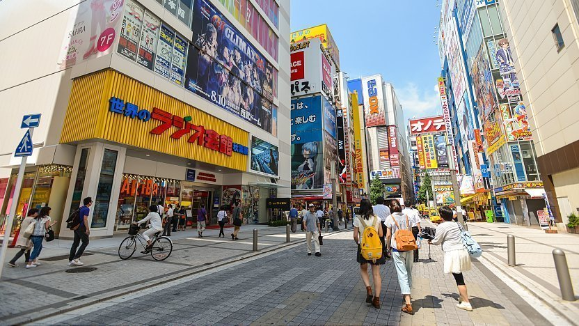
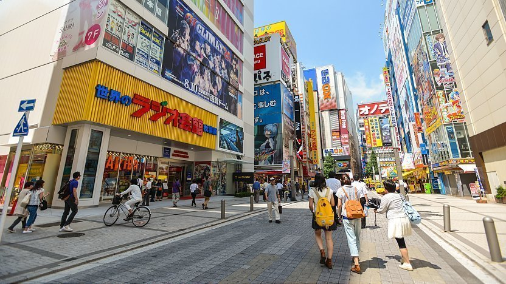

Tokyo
 



Shibuya
Shibuya is one of Tokyo's 23 city wards, but most people only think of the bustling shopping and entertainment district near Shibuya Station when they hear the name. In this sense, Shibuya is one of Tokyo's busiest and most vibrant neighbourhoods, filled with restaurants, nightclubs, and shops that cater to the throngs of tourists who visit the area every day.
Many of Japan's entertainment and fashion trends were first seen on the sidewalks of Shibuya, a hub for youth fashion and culture. Around the neighbourhood, there are numerous malls and department stores that appeal to different types of shoppers. Tokyu or Seibu, two rival companies, are the owners of several of the area's main shopping centres.
Summary
Visitors to Tokyo have what seems like an endless array of options for dining, entertainment, shopping, and culture. Districts like Asakusa, as well as a number of first-rate museums, ancient temples, and gardens, make it possible to appreciate the city's past. Contrary to popular belief, Tokyo also has a lot of lovely green spots both within easy train rides of the city's centre and on its outskirts.